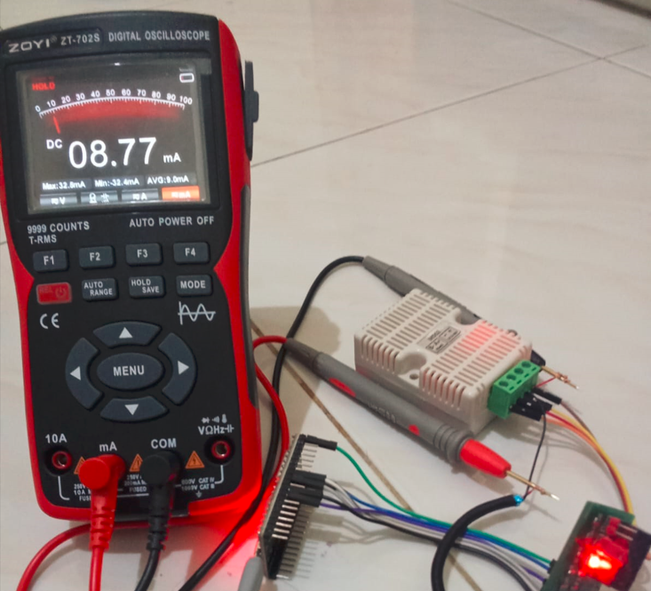
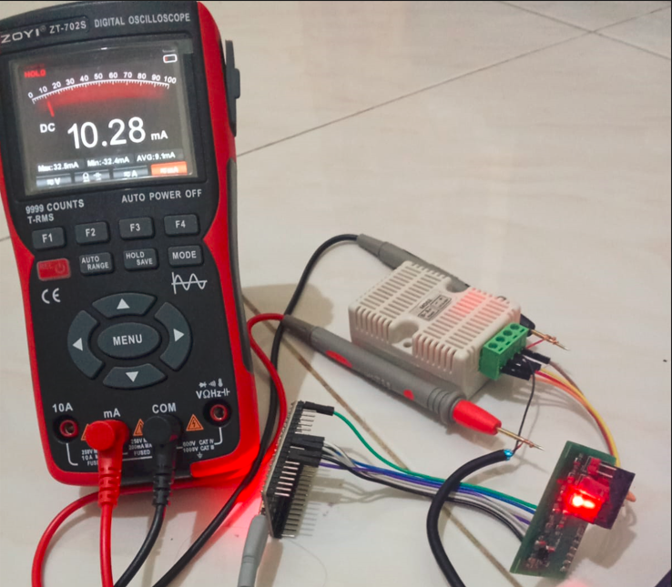
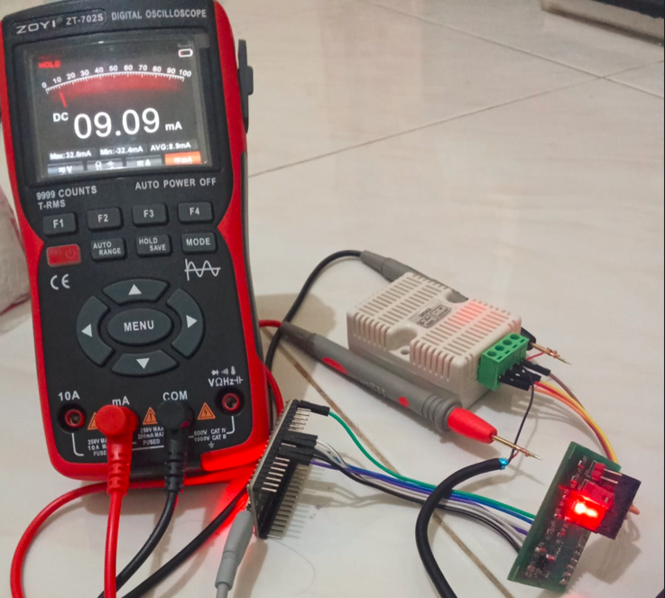
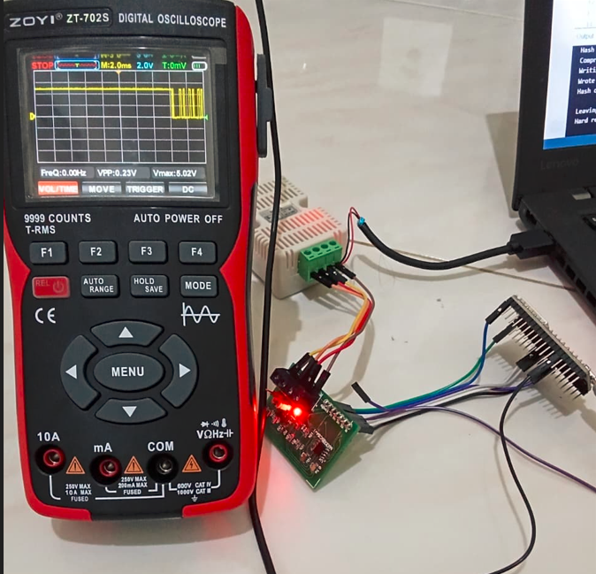
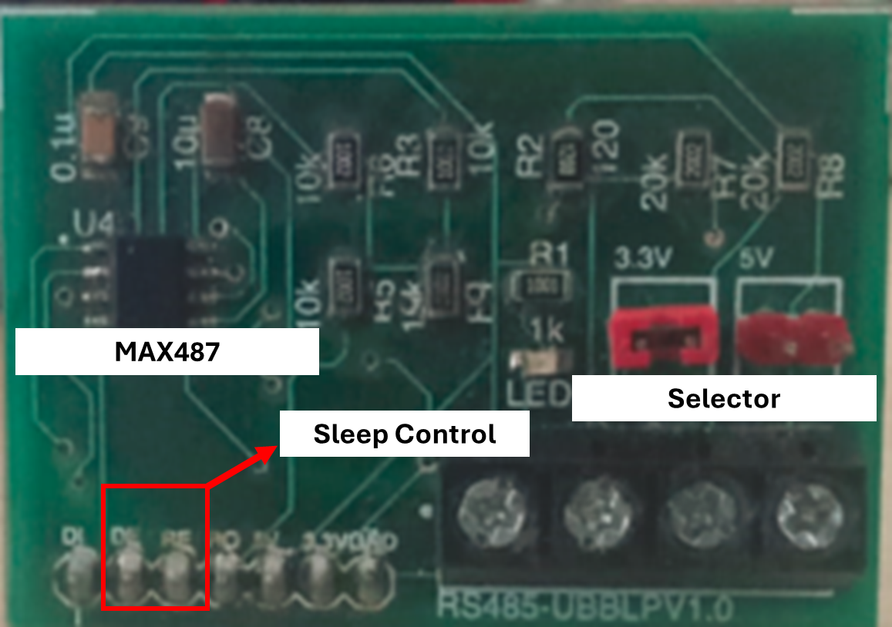

System Architecture
This low-power, dual-voltage RS485 converter facilitates half-duplex communication while providing logic-level translation between 3.3V and 5V systems. Utilizing the MAX487 transceiver, the hardware includes configurable jumpers for supply voltage selection and 120Ω bus termination. The functional block diagram illustrates the signal architecture and control logic for the hardware interface.
Performance and Current Consumption
We validated the "Low Power" designation by performing precise DC current measurements across shutdown, transmit, and receive modes while configured for 3.3V operation. All measurement parameters derived from the on-board ZT-702S oscilloscope confirm stable, compliant output waveforms.

Sleep (Shutdown) Mode
08.77 mA
Multimeter leads configured for DC mA measurement. Red lead to mA, black lead to COM. The device is powered, and the red indication LED is illuminated. This establishes the baseline low-power sleep current.

Transmit
10.28 mA
Current consumption measured during the transmission of a continuous state. Probes are placed directly on the current measurement loop of the device PCB.

Receive
09.09 mA
Peak current measured while actively monitoring the RS485 bus for incoming data.

Transmit Signal (From Converter to MCU)
Waveform of transmit signal shown on digital oscilloscope.
Hardware Architecture

PCB Close-up (RS485-UBBL PV1.0)
This high-resolution close-up of the converter highlights key functional blocks. The clean design centers on the MAX487 transceiver (U4). Crucial elements are labeled for clarity:
- MAX487 (U4): Core RS485 transceiver.
- 10µF & 0.1µF Caps: Local decoupling for stable power.
- Voltage Select Jumpers: Configure the module for 3.3V or 5V operation.
- Control Headers: Logic Interface (DI, DE, RE, RO, 3.3V, 5V).
- 120Ω Term (T): Switchable termination jumper.
- Bus Interface (A/B): RS485 Differential pair terminals.